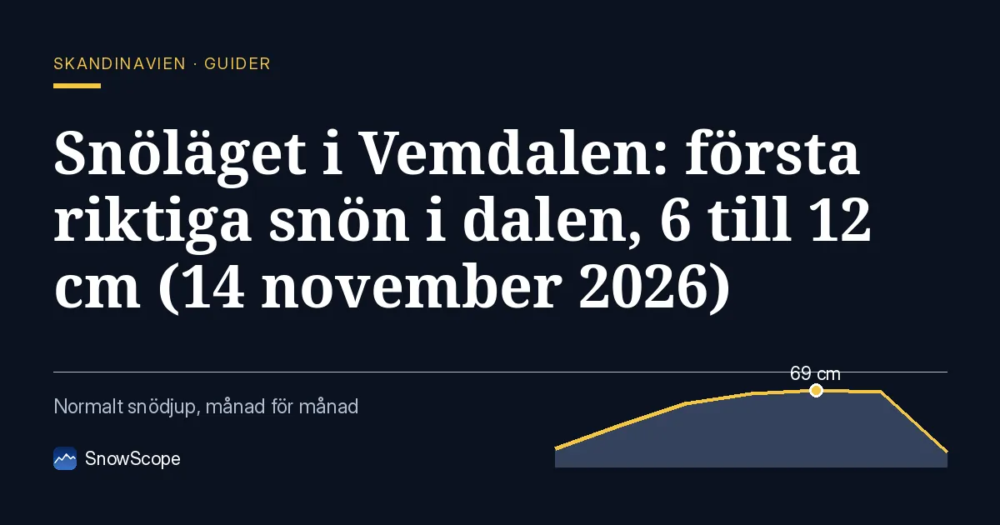

Vemdalsskalet: snö i dag
Vemdalsskalet: snö i dag. Vemdalen har fått säsongens första ordentliga snö. Väderstationerna i dalarna runt Vemdalsskalet och Björnrike gick alla …
Snöläget i Vemdalen: första riktiga snön i dalen, 6 till 12 cm (14 november 2026)

Vemdalen har fått säsongens första ordentliga snö. Väderstationerna i dalarna runt Vemdalsskalet och Björnrike gick alla från barmark eller 1 cm den 11 november till mellan 6 och 12 cm på morgonen den 13 november. Hedeviken, 17 km bort på 420 m, mätte 8 cm; Vemhån på 404 m 6 cm; Åsarna på 448 m 10 cm; och Sveg på 371 m 12 cm. Själva backarna ligger högre, så det finns troligen lite mer där uppe.
Två dagar som gjorde skillnaden
Mönstret är detsamma vid alla stationer: noll fram till den 10 november, en centimeter den 11:e, sedan ett hopp den 12:e och 13:e. Det var ett och samma oväder som täckte hela Härjedalen och södra Jämtland.
Vår egen uppskattning för de senaste sju dagarna är ungefär 14 cm nysnö i Vemdalsskalet och 12 cm i Björnrike. Det stämmer med stationernas värden, om man räknar med att snön har satt sig lite.